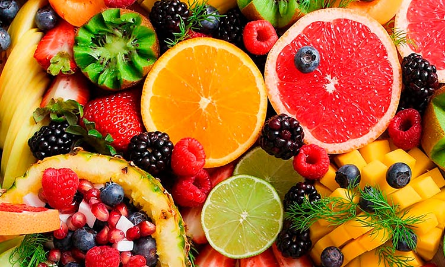
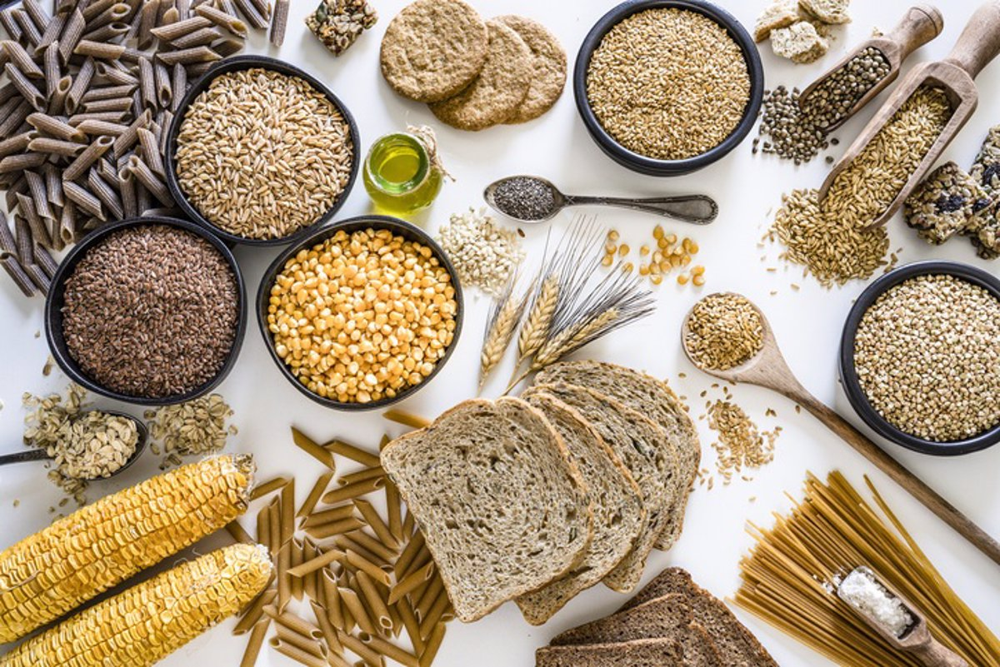

Productos orgánicos destacados

Frutas frescas de temporada
Disfruta del sabor y los nutrientes de las frutas frescas cultivadas de forma natural.

Verduras frescas y orgánicas
Llena tu cuerpo de vitaminas y minerales con nuestras verduras frescas y cultivadas sin pesticidas.

Cereales integrales y granos
Elige entre una amplia variedad de cereales integrales y granos para una alimentación rica en fibra.
VIDEO EDUCATIVO PARA LA SALUD
Recetas saludables
Ensalada de quinoa con verduras
Una receta fresca y nutritiva ideal para el almuerzo o la cena.
Ver recetaBatido de frutas y yogur
Un desayuno o merienda saludable y deliciosa para toda la familia.
Ver recetaHamburguesas de lentejas
Una alternativa vegetariana y deliciosa a las hamburguesas tradicionales.
Ver receta